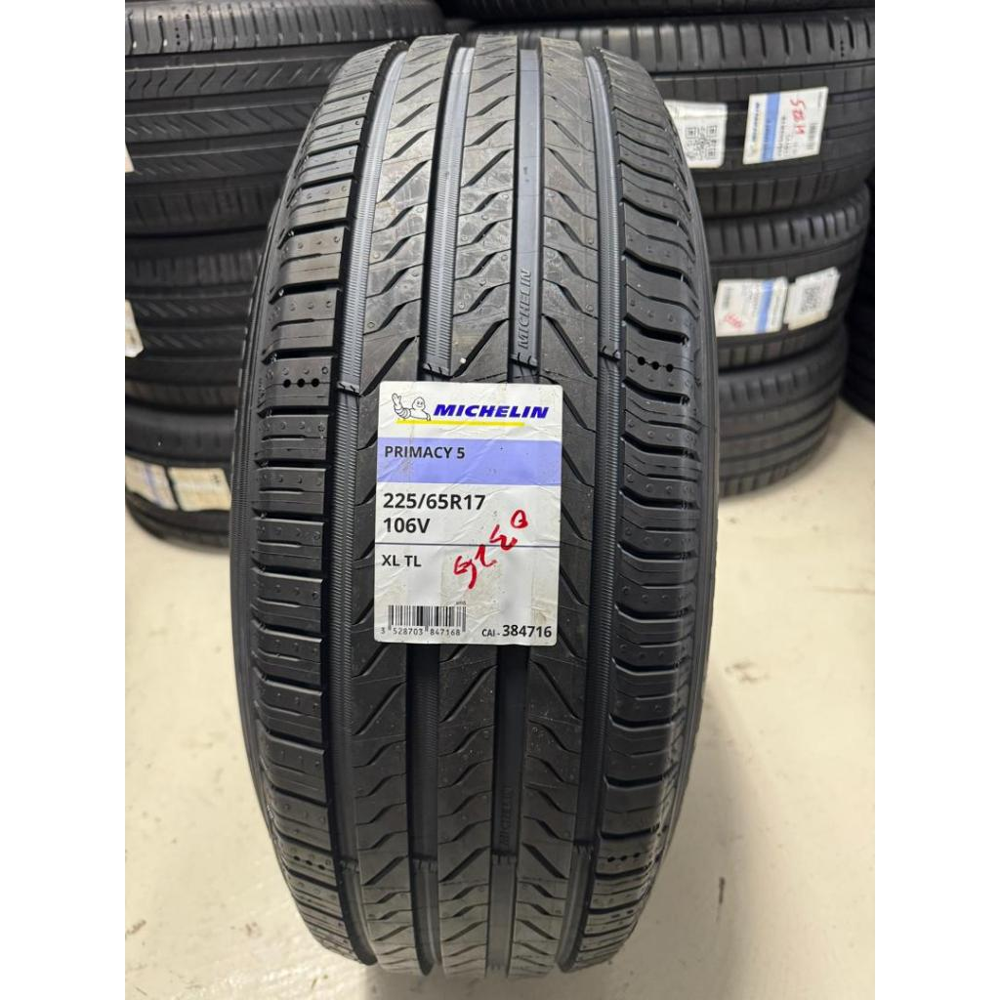

Michelin Primacy5 225/65R17

RM 435.00
Michelin Primacy 5 225/65R17 (102H / 106V) – Premium Comfort & Safety SUV Tyre (ICE & EV Ready) Experience "Confidence Made to Last" with the Michelin Primacy 5 225/65R17, Michelin’s latest-generation premium touring tyre now engineered for modern SUVs, crossovers, and Electric Vehicles (EVs). Designed to handle Malaysia’s tropical rain and highway conditions, it delivers benchmark cabin quietness, superior wet braking from the first to the last mile, and exceptional tread longevity. Key Features & Technologies: • Safety Made to Last (EverGrip & EverTread): Features third-generation functional elastomers and optimized water evacuation channels for up to 16% shorter wet braking distances—maintaining reliable wet grip even as the tyre wears down. • First-Class Silence & Comfort (Silent Rib Gen 3): New tread pattern design and reinforced SUV sidewalls absorb road vibrations and minimize cabin noise, making it ideal for both petrol/hybrid SUVs and quiet EVs. • Extended Mileage (MaxTouch Technology): Maximizes road contact and evenly distributes acceleration, braking, and cornering forces for uniform wear and longer tyre life. • EV-Ready & Fuel Efficient: High-performance tread compound reduces rolling resistance by 10% to improve fuel economy on ICE vehicles and extend battery range on EVs. Technical Specifications: • Brand / Model: Michelin Primacy 5 • Tyre Size: 225/65R17 • Load Index & Speed Rating: 106V (Max load: 950 kg | Max speed: 240 km/h) / 102H (Max load: 850 kg | Max speed: 210 km/h) (Note: 106V is the primary spec in Malaysia) • Vehicle Type: SUV / Crossover / MPV (ICE, Hybrid & EV compatible) • Common Compatible Vehicles: Honda CR-V, Mazda CX-5, Proton X70, Toyota Harrier, Toyota RAV4, Nissan X-Trail, Subaru Forester, BYD
Klang Hock Li Tyre Services Sdn Bhd, Klang, Selangor, Malaysia.
View live product details and enquire